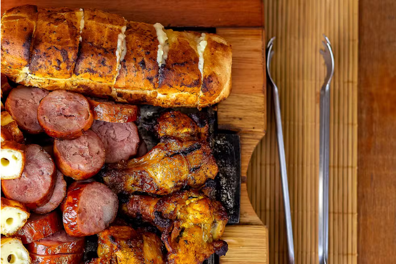

Almoço
Churrasco Pobre
Quem disse que precisa de Picanha? O segredo do churrasco econômico é o tempero da asinha e aquele pão de alho caseiro é melhor do que comprado pronto.

Ingredientes
Como Fazer
- O Tempero do Frango: Tempere as asinhas com sal grosso, suco de 1 limão e um pouco de shoyu ou mostarda se tiver. Deixe marinar por 30min.
- Pão de Alho Caseiro (O Ouro): Misture 4 colheres de maionese, 1 colher de manteiga, 3 dentes de alho amassados e cheiro verde. Faça cortes no pão francês (sem separar as fatias) e recheie generosamente.
- Acenda a brasa. Comece colocando a linguiça e o frango na parte mais alta para assar por dentro.
- Quando estiverem quase prontos, baixe para perto do fogo para dourar a pele.
- Coloque o pão de alho na grelha nos últimos 5 minutos. Atenção: ele queima rápido! Dourou, tá pronto.